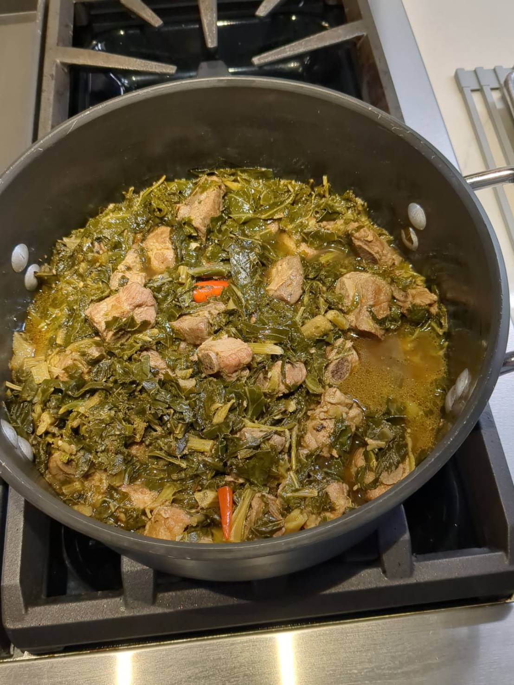

Jhap Jhai

Ingredients
- 3-4 lbs Collard greens (stems and leaves)
- 2 lb pork riblets
- The Three Buddies:
- 8 garlic cloves
- 20 cilantro stems
- 2 tsp white peppercorns
- The Big Four:
- 1 tbs soy sauce
- 1 tbs fish sauce
- 1½ tsp oyster sauce
- ½ tsp sugar
- 1 tsp MSG
- 2 tsp dark soy sauce
- 4 large Thai chili peppers, whole (red or yellow)
- 3 C vegetable stock
- 1½ tbs Better than Bouillon vegetable base
Directions
- Prep Ribs: Cut ribs into riblets and wash with baking soda under cold running water until clear.
- Three Buddies: Grind white peppercorns and garlic, then add cilantro stems and process into a paste.
- Season: Toss ribs with MSG, the Three Buddy paste, and the Big Four seasonings; marinate while prepping remaining ingredients.
- Prep Veg & Stock: Cut vegetables into 2" pieces (separate stems and leaves if using bagged greens). Simmer 4 cups water with 1½ tbs vegetable Better Than Bouillon; reduce by 25%.
- Brown Ribs: Heat avocado oil in an enameled cast-iron pot over medium-high. Brown ribs in batches, adding oil as needed. Reserve ribs; leave fond in pot.
- Deglaze: Add collard stems and 1½ cups stock; deglaze, reserving remaining stock.
- Braise: Return ribs, bring to a boil, then simmer 45 minutes with lid half-on; add dark soy sauce after 20 minutes.
- Add Greens: Stir in remaining greens until wilted, add chilies, nestle into pot. Cover and simmer on low 60 minutes until ribs are very tender.
- Rest: Cool and refrigerate overnight to deepen flavor.
- Reheat & Serve: Reheat with reserved stock (about 1½ cups). Serve with Jok, Flat Eggs, and Fried Dace with Salted Black Beans.
Chef's Notes
- The original recipe uses Chinese kale, which can be bitter. Collards are milder; add mustard greens if you want some bitterness back.
- After refrigeration, the dish will need liquid. Reserved stock is ideal, but water works if necessary.
- Use as many Thai chilies as you like - 4 whole chilies = Thai medium spicy. Red or yellow chilies make them easier to spot and remove.
- Choose large, slightly pungent greens with wavy leaves and long stems. Use more stems than leaves - all parts are usable (e.g., Chinese kale / kai-lan), but stems hold up best to long cooking.
Vegetables Like Chinese kale (kai-lan):
- Broccoli Rabe (Rapini): Has a similar slightly bitter taste and is often used in Italian cooking.
- Collard Greens: While not as bitter, they have a similar texture and can be used similarly in dishes.
- Mustard Greens: These also have a bit of bitterness and can add a similar flavor profile to meals.
- Japanese giant red mustard: This is what we found at the Thai market (that they actually use)
- Swiss Chard: With slightly bitter leaves and sweet stems, it's versatile and nutritious.
- Kale: Especially the lacinato or dinosaur kale variety, which has a more tender leaf texture and a slightly sweet flavor compared to regular kale.
- Spinach: Though much milder, it can sometimes be used as a substitute for Chinese foods kale in various recipes
The Gumbo Page